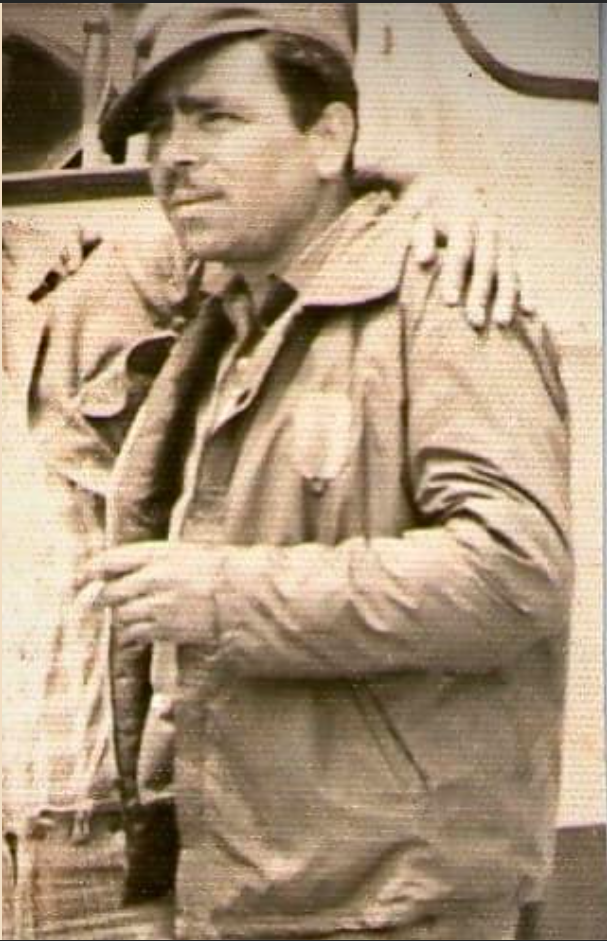

Mi abuelo era una persona ruda, de ceño fruncido, bigote y de carácter fuerte. Se llamaba Gustavo. Hablaba como militar y daba miedo cuando se enojaba. Mi mamá y mis tíos me contaban que, cuando eran chicos, si tenía que corregir usando las manos lo hacía. Eran otros tiempos.
Gustavo era soldador en obras de construcción, trabajó toda su vida. Siempre estaba rodeado de fierros. Conmigo nunca fue duro, yo conocí a una persona diferente. Era muy amoroso, muy comprensivo. Un día le pidió a una de sus nietas que le dijera “Mama vieja” a mi abuela. Mi prima respondió: “No, tú eres papá viejo”. Desde ese momento y para siempre lo llamamos “Papá Viejo”.
Corría el año 1987. Yo tenía 10 años, vivía con mis abuelos. Una casa de 3 plantas. El último piso no tenía techo. No era necesario porque en Lima no llueve. No hay riesgo de que las cosas se mojen ni que el piso se inunde. En ese piso mi abuelo tenía todas sus herramientas. Había clavos, soldaduras, martillos, etc. Un día, curioseando entre las herramientas y jugando a que arreglaba cosas, me acerqué a la parte del piso que daba a la calle. Había una pared que rodeaba toda la planta para evitar que alguien se caiga, pero solo tenía poco más de 1.2 metros de altura. Vi que unos amigos estaban sentados en la casa de frente, conversando. Me agaché para que la pequeña pared me tapara y no me puedan ver. Se me ocurrió que sería genial que esa pared tuviera un hoyo y desde ahí poder ver a las personas del barrio que estuvieran en la calle sin que me puedan ver a mí. Fui donde estaban las herramientas de mi abuelo y me puse manos a la obra. Mi idea era hacer un hueco, un “ojo mágico” espía muy pequeño. Primero calculé cual sería el mejor lugar y una vez ubicado el punto tomé un cincel, una comba y comencé a martillar. Pedazos de pared de regular tamaño iban cayendo a la calle. Afortunadamente nadie pasó por ahí en ese momento. El cincel finalmente traspasa la pared. Me acerqué al agujero, pero la vista apuntaba a la nada. Me había fallado la ingeniería, no había quedado bien. Hice nuevos cálculos y procedí con la creación de un segundo hueco, sin mejor suerte que la vez anterior. Pensé que la tercera sería la vencida y procedí con el tercer hueco. Hice el control de calidad, pero no. Definitivamente ninguno de los 3 servía. Solo se veía el cielo, quien sabe que estaría pasando. Me paré y bajé la mirada para ver si había caído algo de tierra a la calle. Me asusté al ver los grandes trozos de pared que estaban en el suelo. No solo eso, los huecos de la pared eran bastante grandes. Lo suficiente para meterme en problemas si alguien de mi familia se daba cuenta. Guardé rápidamente las herramientas en su lugar y bajé a mi cuarto. Afortunadamente nadie de la casa me había visto.
Al día siguiente, estaba jugando con mis amigos en el parque justo frente a la casa. Entonces veo que mi abuelo sale de la casa y me llama por mi nombre. Parecía que estaba enojado. Me iba a acercar, pero me hizo una seña para que lo esperara y caminaba a paso firme hacia donde yo estaba. Había pasado algo, evidentemente no me quería solo saludar. Respiré hondo e intenté tranquilizarme. Quizá era otra cosa. Cuando ya estuvo cerca me dijo “Ven” y me puso la mano en el hombro. Firme, mano de soldador, de persona que hace trabajo físico. La mano izquierda en mi hombro y la derecha se extendió para señalar la pared afectada. Preguntó “¿Ves los huecos en la pared?”. Me quedé callado por un momento. Estábamos a 50 metros de la casa y vaya que se podía ver el daño desde ahí. Decidí “hacerme el loco”, el despistado. “…Los huecos?” le respondí. “Los huecos! Esos huecos que están en la pared. ¿Los ves?” No había duda, me habían descubierto. Bajé la mirada, en voz baja y con tono de arrepentimiento dije “Si…”. - “Y tú sabes quien ha hecho esos huecos?” Estaba atrapado. Pensé que me iba a pegar, me lo merecía. Nunca me habían pegado, no sabía lo que era eso. ¿Sería solo un golpe o una paliza? “Te estoy preguntando si tú sabes quien ha hecho esos huecos?” me dijo. Pensé que sería mejor confesar. Igual era evidente que él ya sabía y quizá si confesaba se podría apiadar de mi debido a que por lo menos había sido sincero. Respiré hondo para darme valor. Confesaría todo de una vez. Seguí mirando el suelo y tomé valor y dije en voz muy baja “Bueno…” -” Porque yo SI SÉ quién ha hecho esos huecos” me interrumpió. Él estaba perdiendo la audición y a veces había que hablarle fuerte. Estaba a punto de retomar mi relato cuando de repente dijo: “Eso lo hizo un borracho!” Me quedé confundido. ¿Se refería a mí? Evidentemente yo no era un borracho, pero quizá lo que quiso decir es que yo estaba igual de tarado que un borracho por haber hecho lo que hice. Y continuó: “En la noche ha venido un borracho con una pistola, se paró justo aquí donde estamos nosotros y disparó 3 veces hacia la pared. Eso es lo que ha pasado”. Me tardé unos segundos en procesar. Era como si yo fuera una aplicación de GPS y hubiera doblado donde no era, mi cerebro estaba “re-calculando” la ruta. ¿Cuándo finalmente reaccioné le dije “En serio? Que miedo eso”. “Si hijo, hay que tener cuidado. Hay mucho loco en este barrio”. Y se fue.
Repararon la pared. No sé en qué momento. Un día ya estaba bien. Nadie volvió a tocar el tema. Años después mi abuelo, mi Papá Viejo, caería muy enfermo y quedaría postrado en una cama. Estuvo meses así hasta que finalmente se fue. A veces me acercaba a su cama y conversábamos. Ni siquiera al verlo así, casi son poder moverse, tuve el valor de confesarle que, el que disparó las balas al tercer piso de la casa, el pistolero del barrio había sido yo.
